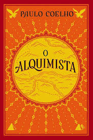
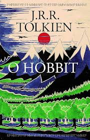
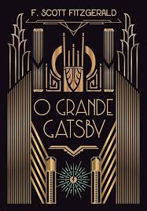
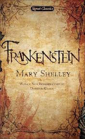
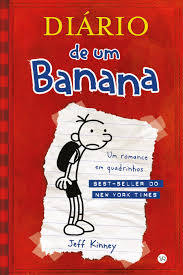

Empréstimos Populares:
|
|
Reservas Recomendadas
|

O Alquimista
Paulo Coelho
Santiago, um jovem pastor espanhol, sonha com um tesouro escondido
nas pirâmides do Egito. Sua jornada em busca de realização pessoal e
espiritualidade o leva a entender que o verdadeiro tesouro está no
autoconhecimento e na capacidade de seguir os próprios sonhos.
Emprestado
|

A Culpa é das Estrelas
John Green
Hazel Grace, uma adolescente com câncer, conhece Augustus Waters em
um grupo de apoio. Juntos, vivem uma história de amor intensa e
transformadora, lidando com a finitude da vida e as complexidades
dos sentimentos enquanto enfrentam a doença.
Não Emprestado
|

O Poder do Hábito
Charles Duhigg
Este livro explora como os hábitos moldam nossas vidas, tanto no
nível pessoal quanto organizacional. Duhigg apresenta uma análise de
como nossos cérebros formam padrões automáticos e como podemos
reprogramá-los para alcançar nossos objetivos.
Emprestado
|
|
|

1984
George Orwell
Winston Smith vive em uma sociedade totalitária sob o controle do
Partido, que vigia todos os aspectos da vida. Ele começa a
questionar o regime e a buscar a verdade, mas logo se vê em um
dilema mortal sobre a liberdade e o controle. Uma reflexão profunda
sobre a vigilância e a manipulação da realidade.
Emprestado
|

O Hobbit
J.R.R. Tolkien
Bilbo Bolseiro, um hobbit tranquilo, é arrastado para uma aventura
extraordinária com anões e um mago, em busca de um tesouro guardado
por um dragão. Ao longo da jornada, ele enfrenta perigos e se
descobre mais corajoso do que jamais imaginou.
Não Emprestado
|

As Vantagens de Ser Invisível
Stephen Chbosky
Charlie é um adolescente tímido e introvertido que, após um ano
difícil, encontra novos amigos e começa a explorar os altos e baixos
da vida adolescente. O livro aborda temas como amizade, amor, saúde
mental e a busca por identidade, tudo sob uma perspectiva honesta e
emocionante
Emprestado
|
|
Coleção Especial
|
|
Empréstimos para Crianças e Jovens:
|

Dom Casmurro
Machado de Assis
Bentinho narra a história de seu amor platônico por Capitu e suas
dúvidas sobre a fidelidade dela. A obra é um estudo psicológico e
filosófico sobre ciúmes, confiança e as limitações da visão humana
sobre a verdade, mantendo uma atmosfera de mistério.
Emprestado
|

O Grande Gatsby
F. Scott Fitzgerald
Ambientado na década de 1920, o romance segue Nick Carraway, que se
torna amigo de Jay Gatsby, um milionário misterioso que vive para
recuperar o amor de Daisy Buchanan. A história reflete sobre a busca
incessante por riqueza, amor e a farsa do "sonho americano".
Não Emprestado
|

Frakenstein
Mary Shelley
Victor Frankenstein, um jovem cientista, cria um monstro a partir de
partes de cadáveres, mas ao abandoná-lo, gera uma série de
tragédias. A obra é uma reflexão sobre a responsabilidade da criação
e os limites da ciência, além de explorar temas como a solidão e a
busca por aceitação.
Emprestado
|
|
|

Harry Potter
J.K. Rowling
Quando Harry descobre que é um bruxo e recebe uma carta para estudar
na Escola de Magia de Hogwarts, sua vida muda para sempre. Com novos
amigos e desafios, Harry aprende sobre amizade, coragem e, acima de
tudo, sobre o poder do amor e do sacrifício.
Emprestado
|

O Pequeno Príncipe
Antoine de Saint-Exupéry
Um piloto perdido no deserto encontra um pequeno príncipe que lhe
conta sobre suas viagens por diferentes planetas. Cada planeta e
cada personagem que ele encontra trazem lições sobre a vida, amor e
os valores mais importantes, ensinando que o essencial é invisível
aos olhos.
Não Emprestado
|

Diário de um Banana
Jeff Kinney
Greg Heffley registra as confusões e os dilemas de sua vida como um
adolescente tentando se encaixar na escola, enquanto lida com sua
família, amigos e as dificuldades típicas dessa fase da vida. O
livro é uma mistura de comédia e reflexão sobre a adolescência.
Emprestado
|
|